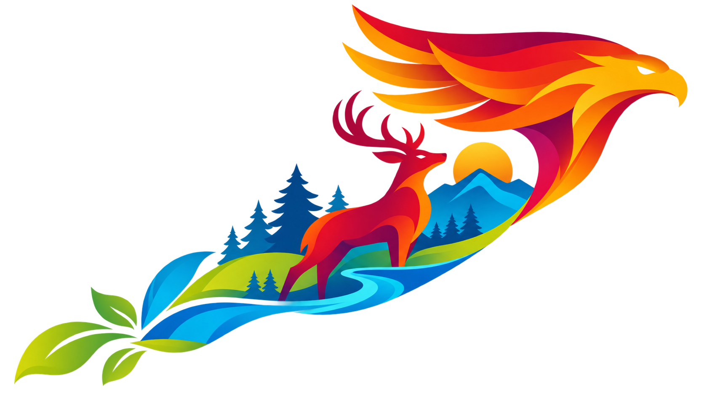
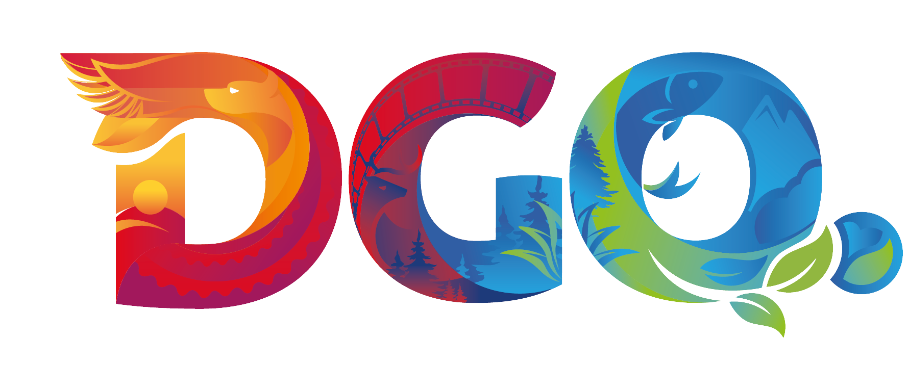

SOLUCIONES DE COMUNICACIÓN, TECNOLOGÍA Y CONTENIDO
Explorar los 7 servicios
→
TOM CUSTOM PRODUCTS
ÁREAS DE INTERVENCIÓN
DURANGO
Territorio de
grandes historias.
LOS CUATRO EJES DE DURANGO
Explorar los 7 servicios
→


▶
DURANGO · MÉXICO
TOM / CAPACIDAD 01 DE 07
01
/ 07
Consultoría estratégica
Primero, claridad.